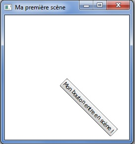

Vous utilisez Qt pour réaliser des interfaces graphiques et vous vous êtes déjà demandé s'il était possible d'afficher des formes ou des widgets en leur donnant un aspect 3D sans l'aide d'une bibliothèque extérieure ? Ce tutoriel est fait pour vous.
En effet, je vais vous expliquer comment utiliser la classe QGraphicsItem, qui permet de façon générale d'intégrer des objets dans une scène 2D mais aussi de leur donner un aspect 3D, moyennant quelques astuces. Attention toutefois, je ne parlerai pas de la méthode permettant de se promener dans la scène comme dans un jeu vidéo : Qt n'est pas vraiment conçu pour ça, même s'il est possible de le faire avec de bonnes connaissances (voir le lien à la fin de ce tutoriel).
J'aborderai donc l'intégration d'objets dans une scène en deux dimensions grâce à Qt, avant de vous montrer comment simuler la profondeur afin de donner une impression de 3D à ces objets.
Afin de visualiser des widgets (et plus généralement des objets graphiques) dans une scène, il faut commencer par en créer une qui va contenir tout ce beau monde. La classe fournie par Qt s'appelle sobrement QGraphicsScene et permet d'insérer des QGraphicsItem. La classe abstraite QGraphicsItem, assez générique, représente tout ce qui est affichable dans une QGraphicsScene. On trouve notamment un nombre important de classes permettant de gérer des polygones, des textes, des QPixmap et... des widgets !
En effet, la classe héritée QGraphicsProxyWidget est particulièrement adaptée à l'insertion des widgets dans une QGraphicsScene. Il suffit de créer votre QGraphicsProxyWidget, de lui attacher le widget que vous désirez intégrer à la scène puis de l'y intégrer en tant qu'objet. Vous manipulez donc votre widget à travers le proxy, tout ceci étant transparent une fois que le proxy et le widget sont attachés. Il est de plus tout à fait possible d'intégrer des widgets complexes, comme une QTabWidget, qui contient lui-même d'autres widgets...
Enfin, comme la scène n'est pas un widget, il faut aussi créer une vue avec la classe QGraphicsView, qui permet d'afficher le contenu de notre scène. Sans plus attendre, commençons par créer notre première scène, avec un bouton au milieu.
#include <QApplication>
#include <QtGui>
int main(int argc, char *argv[])
{
QApplication app(argc, argv);
QPushButton *bouton = new QPushButton("Mon bouton entre en scène !");
QGraphicsScene scene;
QGraphicsProxyWidget *proxy = new QGraphicsProxyWidget();
proxy->setWidget(bouton);
scene.addItem(proxy);
QGraphicsView view(&scene);
view.show();
return app.exec();
}
Ce code devrait vous afficher un joli bouton au milieu d'un écran blanc. Vous venez d'intégrer votre premier widget dans une scène ! Avouez-le, ce n'était pas si difficile ! :p
Déplacer les objets dans la scène
Une fois le widget intégré à la scène à travers notre proxy, Qt nous offre un grand nombre de méthodes pour modifier son positionnement.
Les coordonnées
Si les systèmes de coordonnées 2D ne vous sont pas familiers, sachez que l'axe X est l'axe horizontal orienté vers la droite, et que l'axe Y est l'axe vertical orienté vers le bas. A priori, si vous avez déjà un peu manipulé Qt ou la SDL par exemple, vous devriez vous y retrouver. ^^
Translation
La fonction setPos() de QGraphicsItem prend deux paramètres, dx et dy, qui sont les déplacements relatifs respectivement sur l'axe X et l'axe Y de la scène, paramètres qui deviendront alors les nouvelles coordonnées de notre objet. À savoir qu'une méthode surchargée existe, prenant en paramètre un QPointF. À vous de voir laquelle vous préférez. Il est aussi possible d'appeler la fonction move(), qui ajoute le déplacement sur les deux axes à la position actuelle de l'objet. Essayons tout de suite de déplacer notre objet dans la scène :
#include <QApplication>
#include <QtGui>
int main(int argc, char *argv[])
{
QApplication app(argc, argv);
QPushButton *bouton = new QPushButton("Mon bouton entre en scène !");
QGraphicsScene scene;
QGraphicsProxyWidget *proxy = new QGraphicsProxyWidget();
proxy->setWidget(bouton);
scene.addItem(proxy);
proxy->setPos(150, 200);
QGraphicsView view(&scene);
view.show();
return app.exec();
}
En effet, c'est une des particularités de la QGraphicsScene qui m'a un peu perturbé au début. En fait, par défaut, la scène s'arrange toujours pour placer vos objets au milieu de la vue. C'est un peu embêtant si l'on veut voir du mouvement là-dedans. :euh:
Heureusement, il est possible de définir la zone de la scène que l'on désire voir à l'écran. Ajoutez cette ligne après la création de la scène :
scene.setSceneRect(-150, -150, 300, 300)
Les deux premiers nombres sont les coordonnées du point qui doit être placé dans le coin supérieur gauche de la vue (ici, (-150, -150)). Les deux nombres suivants sont la largeur et la hauteur de la scène que je désire afficher. Ainsi, comme le point (-150, -150) est le coin supérieur gauche de ma fenêtre, je vais retrouver l'origine de la scène au centre de l'écran. Si vous relancez votre code avec et sans le déplacement du bouton, vous devriez voir cette fois-ci une différence de position.
Rotation
Afin d'appliquer une rotation à l'objet, il suffit d'utiliser la méthode setRotation(), pour laquelle vous devrez fournir l'angle de rotation en degrés. Un angle positif tourne l'objet dans le sens des aiguilles d'une montre, un angle négatif le tourne dans le sens inverse.
Par exemple :
proxy->setRotation(45);

Mise à l'échelle
Enfin, la méthode setScale() vous permet d'augmenter ou de diminuer la taille prise par l'objet dans la scène. Un nombre supérieur à 1 agrandit l'image, tandis qu'un nombre compris entre 0 et 1 la réduit. Cette fonction prend aussi en compte les nombres négatifs, ce qui permet d'effectuer une symétrie de l'image en plus de modifier sa taille.
Ces opérations de base sont en gros le minimum vital pour pouvoir gérer vos objets dans la scène 2D. Je parle ici de scène 2D puisque, si vous avez bien suivi mes explications, je n'ai parlé que de deux axes pour la translation, et uniquement d'une rotation autour de l'axe perpendiculaire à votre écran. En effet, un QGraphicsItem est bien affiché en deux dimensions dans la scène et ne prend pas directement la profondeur en paramètre.
Attends, on n'était pas censés pouvoir manipuler des widgets en 3D ?
C'est bien sûr l'objectif de ce tutoriel. Mais avant cela je voulais vous présenter la manipulation en deux dimensions, parce que ça pourra toujours vous servir. Et puis il fallait bien que vous compreniez pourquoi dans les parties suivantes j'utilise un nouvel objet pour faire mes transformations !
Avant de donner pour de bon de la profondeur à notre scène, il va falloir passer un peu de temps sur des aspects mathématiques. Rassurez-vous, ce ne sera pas long, et en plus Qt nous donne tous les outils nécessaires pour limiter les calculs à faire. ;)
On a vu que les QGraphicsItem proposaient diverses méthodes pour déplacer, tourner ou agrandir les widgets insérés. Seulement, tout cela n'a pas vraiment l'air d'avoir la profondeur qu'on attend d'une scène 3D. Pour cela, on va utiliser une nouvelle classe de Qt, la classe QTransform.
Si vous avez travaillé un peu les mathématiques dans vos études supérieures, ce qui suit devrait vous être familier. Sinon ne vous inquiétez pas, Qt s'occupe de tous les calculs pour vous, comme d'habitude. :-°
Utiliser un QTransform avec un QGraphicsItem
Un QTransform représente un objet mathématique appelé matrice, que l'on peut représenter dans notre cas comme un tableau comportant trois lignes et trois colonnes et contenant toutes les informations nécessaires pour effectuer des modifications sur les coordonnées d'un objet dans l'espace.
Voici comment on représente généralement une matrice :
Mais comment je fais moi pour savoir comment je vais remplir ton tableau ? Ça fait quand même neuf nombres à trouver tout seul, je les devine comment ?
Ne vous inquiétez pas : comme je vous le disais, Qt s'occupe de toute la partie mathématique en proposant des fonctions vous permettant de générer et modifier ces matrices. Comme un exemple vaut mieux qu'un long discours, voici tout de suite comment réaliser une translation avec un QTransform :
#include <QApplication>
#include <QtGui>
int main(int argc, char *argv[])
{
QApplication app(argc, argv);
QPushButton *bouton = new QPushButton("Mon bouton entre en scène !");
QGraphicsScene scene;
scene.setSceneRect(-150 , -150, 300, 300);
QGraphicsProxyWidget *proxy = new QGraphicsProxyWidget();
proxy->setWidget(bouton);
scene.addItem(proxy);
QTransform matrix;
matrix.translate(150, 200)
proxy->setTransform(matrix);
QGraphicsView view(&scene);
view.show();
return app.exec();
}
Comme précédemment, j'ai juste eu à renseigner les valeurs de mon vecteur déplacement et Qt a généré tout seul la matrice correspondante.
Exécutez ce code et vous verrez... la même chose que tout à l'heure ! Oui, en l'occurence, le résultat est le même lorsque l'on regarde notre fenêtre. Le widget s'est bien déplacé de 150 pixels vers la droite et de 200 pixels vers le bas.
De même, vous pouvez générer des rotations et des agrandissements à l'aide des méthodes rotate() et scale() de la classe QTransform.
Donc les QTransform servent à la même chose qu'avant, sauf que je dois instancier une classe en plus pour m'en servir. C'est un peu inutile !
En fait, c'est un peu plus compliqué que cela. Il faut plutôt voir les QTransform comme un moyen de faire des transformations composées en une seule opération. Bien sûr, les QTransform permettent aussi d'effectuer les opérations de base, dont les trois que nous avons vues plus haut. Simplement, leur usage est différent.
Par exemple, les modifications effectuées par un QTransform ne sont récupérables que par la méthode transform() du QGraphicsItem modifié. Cela veut dire que les coordonnées de l'objet, auxquelles on pouvait accéder par QGraphicsItem::x() et QGraphicsItem::y(), n'ont pas été modifiées, et valent toujours 0 !
Si vous remplacez le code surligné précédemment par ces lignes, vous vous rendrez compte que votre widget n'a pas bougé de l'origine. En effet, la dernière transformation étant celle qui prend en compte les paramètres x() et y() de notre proxy, il est revenu à sa position (0, 0).
De plus, il ne faut pas confondre les transformations effectuées avec les méthodes fournies par QGraphicsItem que je vous ai présentées par exemple et les transformations passant par un QTransform. En effet, les deux méthodes ne sont pas directement compatibles, à moins de faire toute une gymnastique informatique, et comme on est très feignants on va éviter ça. ^^
Pour l'exemple, essayez de déplacer votre objet vers la droite avec la méthode setPos(), puis de le replacer à la verticale de l'origine de la scène en passant par le QTransform. Plutôt que de prendre en compte la dernière transformation demandée et de se contenter de descendre l'objet, vous voyez que votre programme l'a placé en bas ET à droite. C'est parce que la méthode setPos() à déplacé votre objet vers la droite, puis que QTransform l'a affiché à la verticale de cette nouvelle position.
Avant d'aller plus loin et de voir comment utiliser les QTransform de façon optimale, mon conseil est le suivant.
Le QTransform a donc plus pour but de modifier la façon dont est affiché l'objet plutôt que de modifier l'objet lui-même. C'est pour cette raison que lorsque j'utilise les QGraphicsItem dans mes applications et que je veux utiliser la classe QTransform, je crée des classes dérivées de QGraphicsItem dans lesquelles je stocke les paramètres dont j'ai besoin, comme la position, la rotation, l'échelle, etc., qui servent ensuite à créer ma matrice.
Composer les matrices
Un outil bien pratique
Maintenant qu'on a vu comment utiliser les matrices avec les objets de la scène, voyons pourquoi j'ai introduit cette nouvelle notion : c'est un outil très puissant, souvent utilisé lorsque l'on travaille en trois dimensions.
Une matrice (et donc ici un QTransform) ne se limite pas à effectuer une seule opération à la fois. Elle peut en effet contenir les informations nécessaires pour effectuer à la fois une rotation, une translation et une mise à l'échelle ! Il ne suffira plus que d'appliquer la matrice à l'objet et le tour est joué.
Mathématiquement, la composition de matrices s'obtient en les multipliant entre elles, pour donner une nouvelle matrice qui contient les deux transformations. Cependant, Qt permet de faire ces transformations directement via des méthodes de la classe QTransform.
Par exemple, si je veux créer une matrice de rotation puis que je veux rajouter une translation, je vais écrire ceci :
Il est aussi possible d'utiliser directement la multiplication pour composer vos matrices. Cependant il faut faire attention à l'ordre des calcul. La matrice la plus à gauche dans la multiplication correspond à la transformation effectuée en dernier. Les QTransform tiennent compte de cela, l'utilisation des méthodes rotate() et translate() place la matrice paramètre au début du calcul, et non à la fin. Par exemple, voici deux lignes de code qui effectuent le même calcul :
Par conséquent, soyez encore plus prudent dans le choix de l'ordre de vos lignes de code. Si vous utilisez les multiplications directement, placez vos matrices dans l'ordre inverse dans lequel vous devez faire vos transformations. Si vous utilisez les méthodes fournies par Qt, vous devrez les écrire dans l'ordre normal, ce qui est plus intuitif. Mais je me devais de vous préciser rapidement le fonctionnement, pour votre culture. :p
Je n'ai plus qu'à appliquer la matrice à mon objet situé dans la scène pour que ces deux transformations soient prises en compte.
Une question d'ordre
Sachez maintenant que lorsque vous voudrez composer vos transformations, il faudra les agencer dans un ordre précis.
En effet, les deux codes suivants donneront deux matrices (et donc deux transformations) différentes :
Avec mon premier code, j'ai déplacé mon objet avant de le faire tourner autour de l'origine ; dans le second, je l'ai déplacé après l'avoir fait tourner autour de l'origine.
Dans le premier cas, la transformation finale pourrait se schématiser ainsi :
L'objet a parcouru le chemin en pointillés et ne se trouve ainsi plus dans le plan (x, y) ! L'autre cas en revanche correspond bien à ce qu'on attend intuitivement, c'est-à-dire un objet situé dans le plan (x, y) mais qui a tourné sur lui-même.
Ainsi, pour placer un objet dans la scène, il est plus judicieux d'effectuer d'abord la rotation suivant l'angle voulu, puis le déplacement. La seconde solution est donc celle vous devriez utiliser.
Maintenant que ces règles sont établies, voyons ce que l'on va pouvoir afficher à l'écran !
Nous allons tout d'abord voir comment faire faire à nos widgets des rotations autour d'un axe vertical. Un petit tour dans la doc et hop hop hop, je trouve que la méthode rotate() de QTransform, qui prend en paramètre un angle en degrés, correspond tout à fait à mes besoins !
Voyons ce que ça va donner avec un QWebView par exemple (n'oubliez pas d'ajouter la ligne QT += webkit à votre fichier .pro).
Compilez ça et ô miracle, la rotation fut vous avez une jolie perspective sur votre widget, dont les fonctionnalités sont toujours utilisables ! Un QTextEdit continuera à être éditable dans l'espace, une QWebView continuera à charger les pages demandées, etc. Bien sûr, on peut se contenter de formes géométriques plus basiques, mais il est bon de savoir que cela fonctionne avec tous les widgets. (Vous pouvez essayer d'intégrer zNavigo, je vous assure que ca marche aussi. ;) )
Je vous présente donc le SdZ vu... de profil. ^^
Et que ça bouge !
Maintenant, nous pouvons ajouter un peu d'interaction à notre scène, en permettant à notre vision de bouger par rapport aux objets. Pour cela je vais créer une classe spéciale héritée de QGraphicsProxyWidget qui va contenir les informations dont je souhaite garder la trace : orientation, position, échelle...
Voici le header de la classe que je vous propose :
#include <QGraphicsProxyWidget>
class MyProxy : public QGraphicsProxyWidget
{
public:
MyProxy();
qreal rotationY();
void setRotationY(qreal rotation);
QPointF center();
private:
qreal m_rotationY; // enregistre la rotation autour de l'axe Y
QPointF m_center; // contient la position du centre du widget
}
Puis nous allons créer une classe dérivée de QGraphicsScene pour gérer les événements de la souris. Je vous laisse créer la classe tout seul, il suffit de réimplémenter la méthode mouseMoveEvent(), appelée en cas de déplacement de la souris.
Nous allons par exemple demander d'effectuer une rotation autour de l'axe Y lorsque la souris est déplacée latéralement et que le clic gauche est enfoncé.
Il faut bien penser à remplacer vos déclarations de scene et proxy dans le main par MyScene et MyProxy, sinon évidemment ça ne fonctionnera pas !
Maintenant, lorsque vous déplacez la souris avec le clic gauche enfoncé, votre widget devrait se mettre à tourner verticalement autour de l'origine de la scène.
Attends, mon widget tourne autour de son côté gauche, moi je veux qu'il tourne sur lui-même !
En effet, la rotation du widget s'effectue par rapport à l'origine de la scène (c'est la raison pour laquelle l'ordre des transformations est important). Par conséquent, pour remédier à ce problème, il faut déplacer le widget pour que son centre se situe au point (0, 0) !
Reprenons notre scène avec la QWebView. Le déplacement à effectuer est représenté par le schéma ci-dessous : pour que la rotation s'effectue par rapport au centre du widget, il faut ramener ce centre à l'origine de la scène. C'est donc le déplacement représenté par la flèche rouge qui va nous permettre de réaliser cela.
A priori, vous devriez savoir faire ça tout seul. Il suffit de composer notre matrice d'une translation supplémentaire pour déplacer notre widget vers la gauche et en haut, sur une longueur respective de la moitié de la largeur et la moitié de la hauteur (avec un signe négatif, car on va vers la gauche et vers le haut). Vous pouvez récupérer la taille de vos widgets avec les méthodes proxy->widget()->width() et proxy->widget()->height() et les ajouter comme attributs de votre classe MyProxy pour ne plus avoir à les rechercher. Si vous n'y arrivez pas, jetez un coup d'œil à l'exemple à la fin du paragraphe suivant, qui effectue le centrage du widget.
Gérer plusieurs transformations différentes
Tout ça c'est bien beau, mais comment va-t-on faire lorsque l'on se retrouve avec des widgets comportant plusieurs transformations, on va devoir appliquer la matrice à chaque intervention de l'utilisateur ?
On pourrait envisager ça, mais ça ne serait pas judicieux. D'une part parce qu'il faudrait recalculer la matrice de chaque objet à chaque fois qu'un événement est enregistré, d'autre part parce qu'on risquerait d'intervertir deux transformations, ce qui donnerait un résultat... inattendu.
Souvenez-vous, nous avons créé une classe spécialement pour enregistrer toutes les transformations subies par notre objet (pour l'instant sa position et son orientation actuelle).
L'idée est donc d'enregistrer toutes les modifications apportées à l'objet dans les attributs de celui-ci puis, à intervalles réguliers, d'appliquer un QTransform à l'objet qui va le placer là où il est censé être au moment du rafraîchissement.
Pour cela, on va utiliser un QTimer, qui s'occupera d'appeler notre fonction de mise à jour de la scène à intervalles réguliers. On peut le créer dans le constructeur de notre scène :
Ensuite, pour pouvoir gérer plusieurs objets, on va ajouter un attribut à la classe MyScene, qui va contenir des pointeurs sur tous les objets de la scène. Sachez qu'il existe la fonction QGraphicsScene::items() qui permet de faire ce que je vais vous montrer, mais elle retourne des QGraphicsItem, d'où le besoin de faire un cast. C'est toujours possible mais je n'aime pas beaucoup cette méthode, voici donc comment je me suis débrouillé :
QList<MyProxy *> m_objets;
Pour ajouter un objet à la liste c'est très simple, vous pouvez utiliser l'opérateur de flux <<.
MyProxy *proxy;
// ...
m_objets << proxy;
Dans updateScene(), vous pouvez donc facilement parcourir tous les objets de la scène.
Voici la fonction placeObjet(), qui s'occupe de créer la matrice de transformation et de l'appliquer à notre objet. Attention à l'ordre des transformations !
void MyScene::placeObjet(MyProxy *objet)
{
QTransform m;
// rotation de l'objet
m.rotate(item->rotationY(), Qt::YAxis);
// positionnement du widget dans la scène
m.translate(objet->center().x(), objet->center().y());
// centrage du widget
m.translate(-objet->largeur(), -objet->hauteur());
objet->setTransform(m);
}
Vous pouvez donc maintenant essayer de faire tourner votre widget et de le déplacer avec le clavier !
Je vous ai déjà dit que l'ordre dans lequel vous composez vos transformations était important. Ça le devient encore plus si vous voulez gérer une caméra dans l'espace !
Prenons un exemple. Considérons la tourelle d'un tank dans la scène. Pour la placer correctement, vous allez devoir lui appliquer sa rotation par rapport au tank, puis la rotation du tank par rapport à la scène, puis enfin la translation qui la positionnera à l'endroit voulu. Si maintenant vous voulez placer une caméra (votre point de vue) dans la scène, que se passe-t-il ? Dans ce cas, si vous tournez sur vous-même, vous voyez le monde 3D entier qui tourne autour de votre position. La rotation de la caméra doit donc être appliquée après sa translation !
Voyons donc tout de suite concrètement comment on peut donner l'impression que l'on se déplace dans la scène.
Créer une caméra
Déterminons tout de suite de quelles informations nous allons principalement avoir besoin pour notre caméra : position dans la scène et orientation, tout comme les objets de notre scène.
Je vous laisse deviner le contenu du fichier Camera.cpp, il ne s'agit que de getters et de setters, rien de bien sorcier.
Vous remarquerez aussi que j'ai ajouté un attribut m_zpos à la caméra. C'est en fait une astuce que je voulais vous montrer et qui permettra de donner l'impression que l'on déplace celle-ci vers l'avant où l'arrière. Nous verrons comment faire lors de l'implémentation dans la scène. Sachez simplement que la valeur de cet attribut est modifiée lors de l'appui d'une touche, par exemple des flèches haut et bas ou bien la molette de la souris, au choix.
Ainsi, il n'y a pas grand chose de plus à implémenter pour avoir une caméra de base. Notez qu'ici je ne considère qu'une rotation par rapport à l'axe Y, mais libre à vous d'ajouter les deux autres axes si vous le voulez.
L'avantage d'utiliser un objet caméra dans cette scène, c'est que vous n'avez que les paramètres de ladite caméra à modifier lorsque vous la tournez ou la déplacez, plutôt que de redéplacer tous les objets un par un.
Il suffit maintenant d'ajouter un attribut caméra dans la classe MyScene, et de modifier la fonction placeItem() comme suit :
void MyScene::placeObjet(MyProxy *objet)
{
QTransform m;
m.translate(objet->center().x(), objet->center().y());
m.translate(-objet->largeur(), -objet->hauteur());
// ajout des transformations liées à la position de la caméra
m.translate(-m_camera.pos().x(), -m_camera.pos().y());
m *= QTransform().rotate(m_camera.yaw(), Qt::YAxis);
// simulation du déplacement suivant Z
qreal scale = m_camera.zpos();
m *= QTransform().scale(scale, scale);
item->setTransform(m);
}
Enfin vous remarquez l'utilisation de la fonction QTransform::scale() qui a un paramètre dépendant de l'attribut m_zpos de ma caméra. En effet, si je considère que lorsque ma position en Z augmente je me rapproche de la scène, alors cela revient à voir les objets dans la scène en plus gros... donc à les agrandir ! Ici j'ai fait une implémentation assez basique pour que vous compreniez le principe, on peut cependant affiner le comportement en ajoutant des coefficients multiplicateurs pour gagner en précision.
Voilà ! J'espère que les classes QGraphics**** de Qt vous paraissent plus familières et que vous avez une idée du genre de scènes qu'il est possible de réaliser. Bien sûr, les notions présentées ici ne vous permettent pas de coder le prochain Half Life, mais après tout, il y a d'autres bibliothèques pour cela. :D
Voici pour terminer un lien vers un post trouvé sur les Qt Labs Blogs, où l'on peut voir une vidéo d'un développeur qui s'est amusé à prouver qu'il était possible de faire un Wolfenstein-like avec les QGraphisItem. Vous pourrez d'ailleurs aller jeter un coup d'œil à son code, qui m'a beaucoup aidé pour comprendre le fonctionnement de toutes ces classes. C'est par ici.